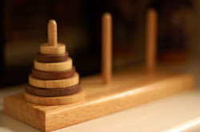

|  |
La Torre di Hanoi (anche conosciuta come Torre di Lucas dal nome del suo inventore) è un rompicapo matematico
composto da tre paletti e un certo numero di dischi di grandezza decrescente, che possono essere infilati in uno
qualsiasi dei paletti.
Il gioco inizia con tutti i dischi incolonnati su un paletto in ordine decrescente, in modo da formare un cono.
Lo scopo del gioco è portare tutti i dischi su un paletto diverso, potendo spostare solo un disco alla volta e potendo
mettere un disco solo su un altro disco più grande, mai su uno più piccolo.
Regole Rompicapo:
Le regole del gioco sono due e molto semplici: si può spostare
solo il disco situato
sulla sommità di una torre, e un disco più grande
non può essere posato sopra un disco
più piccolo. Lo scopo è quello
di spostare tutti i dischi su un'altra
asta in modo che risultino ancora
disposti nello stesso ordine.